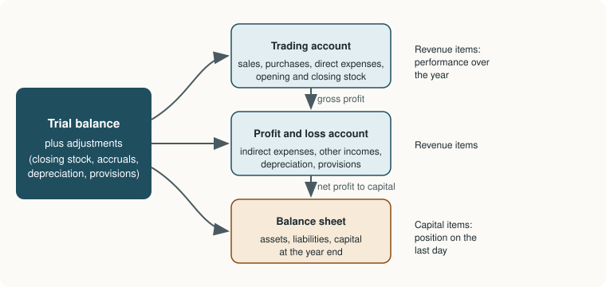

Chapter 8: Final Accounts of a Sole Proprietor¶
From the trial balance to the trading account, the profit and loss account and the balance sheet
Learning outcomes
After studying this chapter you should be able to:
- Explain the purpose of the trading account, the profit and loss account and the balance sheet.
- Prepare a trading account and compute the cost of goods sold and the gross profit.
- Prepare a profit and loss account and find the net profit.
- Classify assets and liabilities and prepare a balance sheet.
- Make the common year-end adjustments, showing each in both places it affects.
- Prepare complete final accounts from a trial balance with adjustments.
8.1 The final accounts¶
At the end of the accounting year the trial balance (Chapter 3) lists every balance in the ledger. It proves arithmetic, but it does not answer the two questions every owner asks: how much profit did I make? and what is my business worth on paper? The final accounts (or financial statements) answer them.
For a sole proprietor carrying on trade, the final accounts are:
- the trading account, which finds the gross profit from buying and selling goods;
- the profit and loss account, which deducts the other expenses, adds other incomes, and finds the net profit;
- the balance sheet, which shows the assets, liabilities and capital at the end of the year.
The first two are usually prepared together as the trading and profit and loss account. They are accounts: they form part of the double-entry system, since the revenue and expense balances are closed by transfer to them. The balance sheet is a statement, not an account: it lists the balances that remain open and are carried into the next year.

The dividing line between the statements is the distinction between revenue items and capital items (Chapter 1). Revenue items (sales, purchases, expenses, incomes) describe what happened during the year and go to the trading and profit and loss account. Capital items (assets, liabilities, capital, drawings) describe the position at the year end and go to the balance sheet.
8.2 The trading account¶
The trading account compares the net sales of the year with the cost of goods sold (cost of sales). Its main items are:
- Debit side: opening stock; purchases less purchases returns; direct expenses, those incurred in buying goods and bringing them to a saleable condition: carriage inwards (freight inwards), wages (for a trading concern, wages of those who handle the goods), import duty, dock charges, and for a manufacturer, factory power, fuel and factory rent.
- Credit side: sales less sales returns; closing stock.
The balance is the gross profit (credit side larger) or gross loss (debit side larger), which is carried down to the profit and loss account.
The cost of goods sold can also be computed directly:
Example 8.1 A trading account
From the following for the year ended 31 March 2026, prepare a trading account: opening stock ₹20,000; purchases ₹1,50,000; purchases returns ₹5,000; carriage inwards ₹3,000; wages ₹12,000; sales ₹2,40,000; sales returns ₹8,000; closing stock ₹30,000.
Trading Account for the year ended 31 March 2026
| Particulars | ₹ | ₹ | Particulars | ₹ | ₹ |
|---|---|---|---|---|---|
| To Opening stock | 20,000 | By Sales | 2,40,000 | ||
| To Purchases | 1,50,000 | Less: Sales returns | 8,000 | 2,32,000 | |
| Less: Purchases returns | 5,000 | 1,45,000 | By Closing stock | 30,000 | |
| To Carriage inwards | 3,000 | ||||
| To Wages | 12,000 | ||||
| To Gross profit c/d | 82,000 | ||||
| 2,62,000 | 2,62,000 |
Cost of goods sold = 20,000 + 1,45,000 + 3,000 + 12,000 − 30,000 = ₹1,50,000. Gross profit = 2,32,000 − 1,50,000 = ₹82,000, which is 82,000 ÷ 2,32,000 = 35.3% of net sales.
Caution
Closing stock does not normally appear in the trial balance, because it is found by counting and valuing the goods on hand at the year end (at the lower of cost and net realisable value). It is given as an adjustment and appears twice: on the credit side of the trading account and as an asset in the balance sheet. If closing stock does appear in the trial balance (because purchases have already been adjusted for it), it goes to the balance sheet only.
8.3 The profit and loss account¶
The profit and loss account starts with the gross profit and deducts the indirect expenses, those not directly connected with buying or making goods, and adds any other incomes. The expenses are usually grouped as:
- Administrative (office) expenses: office salaries, office rent, lighting, printing and stationery, postage, telephone, insurance, audit fees, depreciation of office assets.
- Selling and distribution expenses: salespeople's salaries and commission, advertising, carriage outwards, delivery van expenses, bad debts, discount allowed.
- Financial expenses: interest on loans, bank charges.
- Other losses: loss by fire not covered by insurance, loss on sale of assets.
The incomes include discount received, commission received, rent received, interest earned, and profit on sale of assets.
The balance is the net profit (credit side larger) or net loss, which is transferred to the capital account.
Tip
Carriage inwards (on purchases) is a direct expense and goes to the trading account; carriage outwards (on sales) is a selling expense and goes to the profit and loss account. Wages go to the trading account; salaries to the profit and loss account. "Wages and salaries" given together are usually taken to the trading account unless the question says otherwise.
Closing entries¶
The transfer of balances to the trading and profit and loss account is made by closing entries in the journal:
| Entry | Dr | Cr |
|---|---|---|
| Transfer opening stock, purchases, direct expenses, sales returns | Trading A/c | Each of those accounts |
| Transfer sales, purchases returns | Sales A/c, Purchases Returns A/c | Trading A/c |
| Record closing stock | Closing Stock A/c | Trading A/c |
| Transfer gross profit | Trading A/c | Profit and Loss A/c |
| Transfer indirect expenses and losses | Profit and Loss A/c | Each expense account |
| Transfer other incomes | Each income account | Profit and Loss A/c |
| Transfer net profit | Profit and Loss A/c | Capital A/c |
| Transfer drawings | Capital A/c | Drawings A/c |
Table 8.1. Closing entries.
After these entries, every revenue and expense account is closed, and only the asset, liability and capital accounts remain open: precisely the items in the balance sheet.
8.4 The balance sheet¶
The balance sheet shows the financial position on the last day of the year. Its items are classified so that a reader can judge the solvency and liquidity of the business.
Assets
- Non-current (fixed) assets are held for long-term use, not for sale: land, buildings, plant and machinery, furniture, vehicles. Intangible assets such as goodwill and patents are also non-current. Long-term investments are shown separately.
- Current assets are cash and assets expected to be turned into cash, sold or used up within a year: stock, debtors, bills receivable, short-term investments, prepaid expenses, accrued income, cash at bank and in hand.
Liabilities
- Capital, adjusted for the year's profit and drawings.
- Non-current (long-term) liabilities are due after more than a year: long-term loans.
- Current liabilities are due within a year: creditors, bills payable, bank overdraft, outstanding expenses, income received in advance.
The items may be arranged in order of liquidity (most liquid assets and most urgent liabilities first) or in order of permanence (fixed assets and capital first). The arrangement is called marshalling. Companies follow a prescribed order (Chapter 11); for a sole trader either is acceptable, provided it is followed consistently. This book uses the order of permanence.
8.5 Year-end adjustments¶
The trial balance records transactions as they were entered during the year. Some of them belong partly to another year, and some events of the year have not been recorded at all. Under the accrual basis and the matching concept, these must be adjusted before the final accounts are prepared. Every adjustment has two effects, one in the trading or profit and loss account and one in the balance sheet, because it is a double entry.
| Adjustment | Journal entry | Effect 1 | Effect 2 |
|---|---|---|---|
| Closing stock | Closing Stock Dr; To Trading A/c | Credit side of trading account | Current asset |
| Outstanding expense (incurred, not paid) | Expense Dr; To Outstanding Expense | Added to the expense | Current liability |
| Prepaid expense (paid in advance) | Prepaid Expense Dr; To Expense | Deducted from the expense | Current asset |
| Accrued income (earned, not received) | Accrued Income Dr; To Income | Added to the income | Current asset |
| Income received in advance | Income Dr; To Income Received in Advance | Deducted from the income | Current liability |
| Depreciation | Depreciation Dr; To Asset | Debit of profit and loss account | Deducted from the asset |
| Further bad debts | Bad Debts Dr; To Debtors | Added to bad debts | Deducted from debtors |
| Provision for doubtful debts | Profit and Loss Dr; To Provision | New provision less old, added to bad debts | Deducted from debtors |
| Interest on capital | Interest on Capital Dr; To Capital | Debit of profit and loss account | Added to capital |
| Interest on drawings | Capital Dr; To Interest on Drawings | Credit of profit and loss account | Deducted from capital |
| Goods taken by the owner | Drawings Dr; To Purchases | Deducted from purchases | Added to drawings |
| Interest on loan outstanding | Interest on Loan Dr; To Outstanding Interest | Debit of profit and loss account | Added to the loan (or shown as a liability) |
Table 8.2. The common adjustments and their two effects.
Key idea
An item given in the trial balance appears once in the final accounts. An item given as an adjustment (outside the trial balance) appears twice, because the trial balance does not yet contain either side of its entry.
8.6 A complete example¶
Example 8.2 Final accounts with adjustments: Verma Traders
Trial Balance of Verma Traders as at 31 March 2026
| Name of account | Dr (₹) | Cr (₹) |
|---|---|---|
| Capital | 1,98,000 | |
| Drawings | 24,000 | |
| Opening stock | 40,000 | |
| Purchases and sales | 3,20,000 | 4,60,000 |
| Purchases returns and sales returns | 6,000 | 8,000 |
| Carriage inwards | 5,000 | |
| Wages | 24,000 | |
| Salaries | 48,000 | |
| Rent | 18,000 | |
| Insurance | 6,000 | |
| General expenses | 7,000 | |
| Advertisement | 9,000 | |
| Bad debts | 2,000 | |
| Provision for doubtful debts | 3,000 | |
| Debtors and creditors | 80,000 | 60,000 |
| Discount received | 2,000 | |
| Commission received | 5,000 | |
| Loan from bank at 10% (taken 1 April 2025) | 50,000 | |
| Machinery | 1,20,000 | |
| Furniture | 40,000 | |
| Cash at bank | 32,000 | |
| Cash in hand | 5,000 | |
| Total | 7,86,000 | 7,86,000 |
(The ₹6,000 on the debit side of the returns line is sales returns; the ₹8,000 on the credit side is purchases returns.)
Adjustments
- Closing stock was valued at ₹55,000.
- Wages outstanding ₹2,000; salaries outstanding ₹4,000.
- Insurance prepaid ₹1,500.
- Commission earned but not received ₹1,000.
- Depreciate machinery at 10% and furniture at 5%.
- Write off further bad debts of ₹1,000 and maintain a provision for doubtful debts at 5% of debtors.
- Interest on the bank loan for the whole year is outstanding.
- Goods costing ₹3,000 taken by the proprietor for personal use have not been recorded.
Workings
- Net purchases = 3,20,000 − 8,000 returns − 3,000 goods taken = ₹3,09,000.
- Wages = 24,000 + 2,000 = ₹26,000; salaries = 48,000 + 4,000 = ₹52,000.
- Insurance = 6,000 − 1,500 = ₹4,500; commission = 5,000 + 1,000 = ₹6,000.
- Depreciation: machinery 10% × 1,20,000 = ₹12,000; furniture 5% × 40,000 = ₹2,000.
- Debtors after further bad debts = 80,000 − 1,000 = ₹79,000; new provision = 5% × 79,000 = ₹3,950.
- Charge for bad and doubtful debts = 2,000 + 1,000 + 3,950 − 3,000 = ₹3,950.
- Interest on loan = 10% × 50,000 = ₹5,000.
Trading and Profit and Loss Account of Verma Traders for the year ended 31 March 2026
| Particulars | ₹ | ₹ | Particulars | ₹ | ₹ |
|---|---|---|---|---|---|
| To Opening stock | 40,000 | By Sales | 4,60,000 | ||
| To Purchases | 3,20,000 | Less: Sales returns | 6,000 | 4,54,000 | |
| Less: Purchases returns | 8,000 | By Closing stock | 55,000 | ||
| Less: Goods taken by proprietor | 3,000 | 3,09,000 | |||
| To Carriage inwards | 5,000 | ||||
| To Wages | 24,000 | ||||
| Add: Outstanding | 2,000 | 26,000 | |||
| To Gross profit c/d | 1,29,000 | ||||
| 5,09,000 | 5,09,000 | ||||
| To Salaries | 48,000 | By Gross profit b/d | 1,29,000 | ||
| Add: Outstanding | 4,000 | 52,000 | By Discount received | 2,000 | |
| To Rent | 18,000 | By Commission received | 5,000 | ||
| To Insurance | 6,000 | Add: Accrued | 1,000 | 6,000 | |
| Less: Prepaid | 1,500 | 4,500 | |||
| To General expenses | 7,000 | ||||
| To Advertisement | 9,000 | ||||
| To Bad debts | 2,000 | ||||
| Add: Further bad debts | 1,000 | ||||
| Add: New provision | 3,950 | ||||
| 6,950 | |||||
| Less: Old provision | 3,000 | 3,950 | |||
| To Depreciation: Machinery | 12,000 | ||||
| Furniture | 2,000 | 14,000 | |||
| To Interest on loan | 5,000 | ||||
| To Net profit transferred to capital | 23,550 | ||||
| 1,37,000 | 1,37,000 |
Check: indirect expenses 52,000 + 18,000 + 4,500 + 7,000 + 9,000 + 3,950 + 14,000 + 5,000 = ₹1,13,450; incomes 1,29,000 + 2,000 + 6,000 = ₹1,37,000; net profit = 1,37,000 − 1,13,450 = ₹23,550.
Balance Sheet of Verma Traders as at 31 March 2026
| Liabilities | ₹ | ₹ | Assets | ₹ | ₹ |
|---|---|---|---|---|---|
| Capital | 1,98,000 | Machinery | 1,20,000 | ||
| Add: Net profit | 23,550 | Less: Depreciation | 12,000 | 1,08,000 | |
| 2,21,550 | Furniture | 40,000 | |||
| Less: Drawings (24,000 + 3,000) | 27,000 | 1,94,550 | Less: Depreciation | 2,000 | 38,000 |
| Loan from bank | 50,000 | Closing stock | 55,000 | ||
| Add: Interest outstanding | 5,000 | 55,000 | Debtors | 80,000 | |
| Creditors | 60,000 | Less: Further bad debts | 1,000 | ||
| Outstanding wages | 2,000 | 79,000 | |||
| Outstanding salaries | 4,000 | 6,000 | Less: Provision for doubtful debts | 3,950 | 75,050 |
| Prepaid insurance | 1,500 | ||||
| Accrued commission | 1,000 | ||||
| Cash at bank | 32,000 | ||||
| Cash in hand | 5,000 | ||||
| 3,15,550 | 3,15,550 |
Check: liabilities 1,94,550 + 55,000 + 60,000 + 6,000 = ₹3,15,550; assets 1,08,000 + 38,000 + 55,000 + 75,050 + 1,500 + 1,000 + 32,000 + 5,000 = ₹3,15,550.
Follow each adjustment of Example 8.2 through both statements and you will see the key idea of Section 8.5 at work: the outstanding wages, for instance, are added to wages in the trading account and shown as a liability; the goods taken by the proprietor are deducted from purchases and added to drawings.
8.7 The vertical form¶
The horizontal (T-shaped) form above follows the double-entry structure of the accounts. Many businesses, and all companies, present their results in a vertical form, one figure below another, which is easier to read and to compare across years. Example 8.2 in vertical form begins:
| Verma Traders: Statement of profit for the year ended 31 March 2026 | ₹ | ₹ |
|---|---|---|
| Net sales (4,60,000 − 6,000) | 4,54,000 | |
| Less: Cost of goods sold | ||
| Opening stock | 40,000 | |
| Net purchases | 3,09,000 | |
| Carriage inwards | 5,000 | |
| Wages | 26,000 | |
| 3,80,000 | ||
| Less: Closing stock | 55,000 | 3,25,000 |
| Gross profit | 1,29,000 | |
| Add: Other income (discount 2,000 + commission 6,000) | 8,000 | |
| 1,37,000 | ||
| Less: Indirect expenses (as in the account) | 1,13,450 | |
| Net profit | 23,550 |
Table 8.3. The trading and profit and loss account of Example 8.2 in vertical form.
The figures are the same; only the layout changes. Chapter 11 presents the vertical format prescribed for companies.
8.8 Summary¶
Summary
- The final accounts of a sole trader are the trading account (gross profit), the profit and loss account (net profit) and the balance sheet (financial position).
- Cost of goods sold = opening stock + net purchases + direct expenses − closing stock; gross profit = net sales − cost of goods sold.
- Indirect expenses (administrative, selling, financial) and other incomes go to the profit and loss account; net profit is added to capital.
- Closing entries transfer all revenue and expense balances; only asset, liability and capital accounts remain for the balance sheet.
- Assets are non-current or current; liabilities are capital, long-term or current; they are marshalled by liquidity or permanence.
- Each adjustment appears twice, once in the trading or profit and loss account and once in the balance sheet; items in the trial balance appear once.
8.9 Exercises¶
Exercise 1
Compute the cost of goods sold and the gross profit: opening stock ₹45,000; purchases ₹2,80,000; purchases returns ₹6,000; freight inwards ₹9,000; closing stock ₹52,000; sales ₹3,90,000; sales returns ₹10,000.
Answer
Cost of goods sold = 45,000 + (2,80,000 − 6,000) + 9,000 − 52,000 = ₹2,76,000. Net sales = 3,90,000 − 10,000 = ₹3,80,000. Gross profit = 3,80,000 − 2,76,000 = ₹1,04,000.
Exercise 2
State where each item appears in the final accounts: (a) carriage outwards; (b) bank overdraft; (c) discount allowed; (d) prepaid rent; (e) wages; (f) drawings; (g) accrued interest; (h) goodwill.
Answer
(a) profit and loss account, debit (selling expense); (b) balance sheet, current liability; (c) profit and loss account, debit; (d) balance sheet, current asset (and deducted from rent in the profit and loss account if given as an adjustment); (e) trading account, debit; (f) balance sheet, deducted from capital; (g) balance sheet, current asset (and added to interest income if an adjustment); (h) balance sheet, non-current (intangible) asset.
Exercise 3
From the trial balance of Nisha Stores at 31 March 2026, prepare the trading and profit and loss account and the balance sheet. Debit balances: opening stock ₹15,000; purchases ₹85,000; wages ₹6,000; rent ₹9,000; salaries ₹18,000; debtors ₹25,000; furniture ₹20,000; cash ₹8,000; drawings ₹6,000. Credit balances: capital ₹50,000; sales ₹1,30,000; creditors ₹12,000. Adjustments: closing stock ₹22,000; rent prepaid ₹1,000; salaries outstanding ₹2,000; depreciation on furniture 10%; the sales include ₹4,000 received in advance for goods to be supplied in April 2026.
Answer
Trial balance totals: debit ₹1,92,000; credit ₹1,92,000.
Trading and Profit and Loss Account for the year ended 31 March 2026
| Particulars | ₹ | Particulars | ₹ |
|---|---|---|---|
| To Opening stock | 15,000 | By Sales (1,30,000 − 4,000 advance) | 1,26,000 |
| To Purchases | 85,000 | By Closing stock | 22,000 |
| To Wages | 6,000 | ||
| To Gross profit c/d | 42,000 | ||
| Total | 1,48,000 | Total | 1,48,000 |
| To Rent (9,000 − 1,000) | 8,000 | By Gross profit b/d | 42,000 |
| To Salaries (18,000 + 2,000) | 20,000 | ||
| To Depreciation on furniture | 2,000 | ||
| To Net profit | 12,000 | ||
| Total | 42,000 | Total | 42,000 |
Balance Sheet as at 31 March 2026
| Liabilities | ₹ | Assets | ₹ |
|---|---|---|---|
| Capital (50,000 + 12,000 − 6,000) | 56,000 | Furniture (20,000 − 2,000) | 18,000 |
| Creditors | 12,000 | Closing stock | 22,000 |
| Outstanding salaries | 2,000 | Debtors | 25,000 |
| Advance from customers | 4,000 | Prepaid rent | 1,000 |
| Cash | 8,000 | ||
| Total | 74,000 | Total | 74,000 |
Exercise 4
Pass the adjustment entries: (a) rent received includes ₹2,500 for the next year; (b) interest on investments ₹1,800 has accrued; (c) insurance of ₹12,000 was paid on 1 October 2025 for one year (year ends 31 March).
Answer
(a) Rent Received A/c Dr 2,500; To Rent Received in Advance A/c 2,500.
(b) Accrued Interest A/c Dr 1,800; To Interest on Investments A/c 1,800.
(c) Six months (April to September 2026) are prepaid: 12,000 × 6/12 = 6,000. Prepaid Insurance A/c Dr 6,000; To Insurance A/c 6,000.
Exercise 5
A proprietor's capital is ₹2,00,000. Interest on capital at 6% is to be allowed. Show the effect on net profit and on closing capital, and explain the result.
Answer
Interest on capital = 6% × 2,00,000 = ₹12,000. It is debited to the profit and loss account (net profit falls by ₹12,000) and credited to capital (capital rises by ₹12,000). Since the net profit is also credited to capital, the closing capital is unchanged. For a sole trader, interest on capital only shows how much of the profit is a return on the money invested; it matters more in partnerships (Chapter 10), where it changes how profit is shared.
Exercise 6
The trial balance shows debtors ₹60,000, bad debts ₹1,200 and a provision for doubtful debts of ₹2,500. Adjustments: write off a further ₹1,000 as bad, and create a provision of 5% on debtors. Show the entries in the profit and loss account and the balance sheet.
Answer
Debtors after further bad debts: 60,000 − 1,000 = ₹59,000. New provision: 5% × 59,000 = ₹2,950. Charge to profit and loss = 1,200 + 1,000 + 2,950 − 2,500 = ₹2,650. Balance sheet: debtors 60,000 − 1,000 − 2,950 = ₹56,050.
8.10 Quiz¶
Check your understanding of Chapter 8
Exercise 1
Carriage inwards is shown in the
- trading account
- profit and loss account
- balance sheet
Answer
trading account
Exercise 2
Opening stock ₹10,000; net purchases ₹70,000; direct expenses ₹5,000; closing stock ₹15,000. What is the cost of goods sold, in rupees?
Answer
70000 / 70,000 / ₹70,000
Exercise 3
Salaries outstanding at the year end are shown as
- an addition to salaries and a current liability
- a deduction from salaries and a current asset
- an addition to salaries and a current asset
- a deduction from capital
Answer
an addition to salaries and a current liability
Exercise 4
An adjustment given outside the trial balance appears in the final accounts
- once
- twice
- not at all
Answer
twice
Exercise 5
Goods taken by the proprietor for personal use are
- added to sales and to capital
- deducted from purchases and added to drawings
- added to purchases and to drawings
- shown as an expense in the profit and loss account
Answer
deducted from purchases and added to drawings
Exercise 6
Income received in advance is shown in the balance sheet as a
- current asset
- current liability
- non-current asset
- part of capital
Answer
current liability